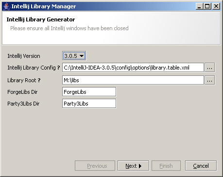

A Swing wizard library for Java based on a WizardModel and a number of WizardSteps. The library comes with three models that can be extended, they are as follows.
Todo
GUI Commands - A comprehensive command framework for swing (Commercial/Free for non commercial)
ExplicitTableBuilder - A powerful Swing layout builder based on ExplicitLayout (LGPL).
Please feel free to join as an observer, download the code and hack away. Please note that developer roles are reserved for existing project members who have sumbmitted qualitly patches.
CHANGES.TXT
wizard-0.1.12.jar
wizard-0.1.12-src.jar
wizard-0.1.12-docs.zip

In this example I called wizard.setOverviewVisible(false) to hide the
overview panel. This particular example also uses another project of mine for the layout.
If you've found the Wizard Framework useful and you'd like to make a donation, you can use the Paypal button below. Please note there is absolutely no obligation to make a donation and that the library will remain free of charge.
For an example of a multipath wizard please see the javadoc for MultiPathModel.java.
1. Basic Usage
StaticModel model = new StaticModel();
model.add(new MyFirstStep());
model.add(...);
model.add(...);
Wizard wizard = new Wizard(model);
wizard.showInFrame("My first wizard");
Please read the javadoc for details on using the other standard models.
public class MyWizardStep
extends WizardStep
{
private MyModel model;
private JPanel mainView;
private JCheckBox agreeCheckbox;
private JTextArea license;
public MyWizardStep()
{
super("My First Step", "A summary of the first step");
// build and layout the components..
mainView = new JPanel();
agreeCheckbox = new JCheckBox("Agree");
license = new JTextArea();
mainView.setLayout(...);
mainView.add(agreeCheckbox);
...
// listen to changes in the state..
agreeCheckbox.addItemListener(new ItemListener()
{
public void itemSelected(ItemEvent e)
{
// only continue if they agree
MyWizardStep.this.setComplete(agreeCheckbox.isSelected());
}
});
}
public void init(WizardModel model)
{
this.model = (MyModel) model;
}
public void prepare()
{
// load our view...
setView(mainView);
}
public void applyState()
throws InvalidStateException
{
// display a progress bar of some kind..
setView(myProgressView);
setBusy(true);
try
{
// do some work on another thread.. see Foxtrot
...
}
finally
{
setBusy(false);
}
// if error then throw an exception
if (!ok)
{
// restore our original view..
setView(mainView)
// The wizard will display this message to the user.
// You can prevent this by calling invalidStateException.setShowUser(false)
throw new InvalidStateException("That didn't work!");
}
// all is well so update the model
model.setAcceptsLicense(agreeCheckbox.isSelected());
}
public void getPreferredSize()
{
// use the size of our main view...
mainView.getPreferredSize();
}
}